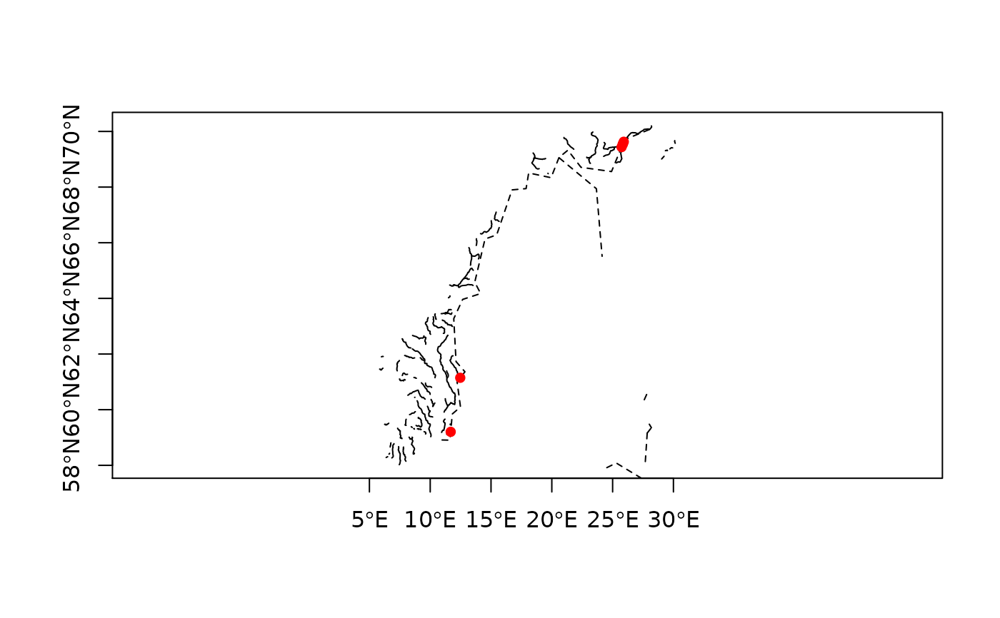

topo-bin-gIntersection.RdFunction for determining the intersection between the two given geometries
gIntersection(spgeom1, spgeom2, byid=FALSE, id=NULL, drop_not_poly, drop_lower_td=FALSE, unaryUnion_if_byid_false=TRUE, checkValidity=NULL)
| spgeom1, spgeom2 | sp objects as defined in package sp |
|---|---|
| byid | Logical vector determining if the function should be applied across ids (TRUE) or the entire object (FALSE) for spgeom1 and spgeom2 |
| id | Character vector defining id labels for the resulting geometries, if unspecified returned geometries will be labeled based on their parent geometries' labels. |
| drop_not_poly | deprecated argument, use drop_lower_td |
| drop_lower_td | default FALSE; if TRUE, objects will be dropped from output GEOMETRYCOLLECTION objects to simplify output if their topological dimension is less than the minimum topological dinension of the input objects. |
| unaryUnion_if_byid_false | default TRUE; if |
| checkValidity | default NULL, integer 0L (no action), 1L (check), 2L (check and try to buffer by zero distance to repair). If NULL, a value set to 0L for GEOS < 3.7.2, 1L for GEOS >= 3.7.2 is read from values assigned on load. Error meesages from GEOS do not say clearly which object fails if a topology exception is encountered. If this argument is > 0L, |
Returns all spatial intersections as sp objects of the appropriate class. If the geometries do not intersect then an empty geometry is returned.
Error messages from GEOS, in particular topology exceptions, report 0-based object order, so geom 0 is spgeom1, and geom 1 is spgeom2.
Roger Bivand & Colin Rundel
if (require(maptools)) { xx <- readShapeSpatial(system.file("shapes/fylk-val-ll.shp", package="maptools")[1], proj4string=CRS("+proj=longlat +datum=WGS84")) bbxx <- bbox(xx) wdb_lines <- system.file("share/wdb_borders_c.b", package="maptools") xxx <- Rgshhs(wdb_lines, xlim=bbxx[1,], ylim=bbxx[2,])$SP res <-gIntersection(xx, xxx) plot(xx, axes=TRUE) plot(xxx, lty=2, add=TRUE) plot(res, add=TRUE, pch=16,col='red') }#> Warning: readShapeSpatial is deprecated; use rgdal::readOGR or sf::st_read#> Warning: readShapeLines is deprecated; use rgdal::readOGR or sf::st_read#> Data are line datapol <- readWKT(paste("POLYGON((-180 -20, -140 55, 10 0, -140 -60, -180 -20),", "(-150 -20, -100 -10, -110 20, -150 -20))")) library(sp) GT <- GridTopology(c(-175, -85), c(10, 10), c(36, 18)) gr <- as(as(SpatialGrid(GT), "SpatialPixels"), "SpatialPolygons") try(res <- gIntersection(pol, gr, byid=TRUE))#> output subgeometry 88, row.name: 1 g365 #> subsubgeometry 0: Polygon #> subsubgeometry 1: Point #> Error in RGEOSBinTopoFunc(spgeom1, spgeom2, byid, id, drop_lower_td, unaryUnion_if_byid_false, : #> Geometry collections may not contain other geometry collectionsres <- gIntersection(pol, gr, byid=TRUE, drop_lower_td=TRUE) # Robert Hijmans difficult intersection case load(system.file("test_cases/polys.RData", package="rgeos")) try(res <- gIntersection(a, b, byid=TRUE))#> output subgeometry 1, row.name: 109 294 #> subsubgeometry 0: Polygon #> subsubgeometry 1: Polygon #> subsubgeometry 2: LineString #> Error in RGEOSBinTopoFunc(spgeom1, spgeom2, byid, id, drop_lower_td, unaryUnion_if_byid_false, : #> Geometry collections may not contain other geometry collectionsres <- gIntersection(a, b, byid=TRUE, drop_lower_td=TRUE) unlist(sapply(slot(res, "polygons"), function(p) sapply(slot(p, "Polygons"), slot, "area")))#> [1] 1.700212e+06 3.135474e-08 9.982584e-07 2.087862e-06 1.434509e-06 #> [6] 3.926317e-07 5.350546e-07 7.269743e+06 3.117775e+05 1.212778e+03 #> [11] 1.424050e+06# example from Pius Korner 2015-10-25 poly1 <- SpatialPolygons(list(Polygons(list(Polygon(coords=matrix(c(0, 0, 2, 2, 0, 1, 1, 0), ncol=2, byrow=FALSE))), ID=c("a")), Polygons(list(Polygon(coords=matrix(c(0, 0, 2, 2, 2, 3, 3, 2), ncol=2, byrow=FALSE))), ID=c("b")))) poly2 <- SpatialPolygons(list(Polygons(list(Polygon(coords=matrix(c(0, 0, 2, 2, 1, 1, 1, 3, 3, 0, 0, 2), ncol=2, byrow=FALSE))), ID=c("c")))) plot(poly1, border="orange")gI <- gIntersection(poly1, poly2, byid=TRUE, drop_lower_td=TRUE) plot(gI, add=TRUE, border="red", lwd=3)oT <- get_RGEOS_polyThreshold() oW <- get_RGEOS_warnSlivers() oD <- get_RGEOS_dropSlivers() set_RGEOS_polyThreshold(1e-3) set_RGEOS_warnSlivers(TRUE) res1 <- gIntersection(a, b, byid=TRUE, drop_lower_td=TRUE)#> Warning: 1: MultiPolygon object 109 294 area 1.02961e-06#> Warning: 2: MultiPolygon object 202 294 area 3.915e-06#> Warning: 3: Polygon object 208 294 area 5.35055e-07#> Warning: Exterior ring 0 of object 109 294 area 3.13547e-08#> Warning: Exterior ring 1 of object 109 294 area 9.98258e-07#> Warning: Exterior ring 0 of object 202 294 area 2.08786e-06#> Warning: Exterior ring 1 of object 202 294 area 1.43451e-06#> Warning: Exterior ring 2 of object 202 294 area 3.92632e-07#> Warning: Exterior ring 0 of object 208 294 area 5.35055e-07#> [1] 1.700212e+06 3.135474e-08 9.982584e-07 2.087862e-06 1.434509e-06 #> [6] 3.926317e-07 5.350546e-07 7.269743e+06 3.117775e+05 1.212778e+03 #> [11] 1.424050e+06#> Warning: 1: MultiPolygon object 109 294 area 1.02961e-06#> Warning: 2: MultiPolygon object 202 294 area 3.915e-06#> Warning: 3: Polygon object 208 294 area 5.35055e-07#> [1] 1700211.935 7269743.131 311777.515 1212.778 1424050.306set_RGEOS_dropSlivers(FALSE) oo <- gUnaryUnion(res1, c(rep("1", 3), "2", "3", "4"), checkValidity=2L)#> Warning: Too few points in geometry component at or near point 3001878.09776633 2416352.9858511998#> Warning: Too few points in geometry component at or near point 3001878.09776633 2416352.9858511998#> Warning: Too few points in geometry component at or near point 3000956.1033775401 2413481.790976#>#> Warning: CRS object has no comment#> Warning: CRS object has no comment#> Warning: 1: Polygon object 109 294 area 9.67871e-07#> Warning: 2: Polygon object 202 294 area 2.02431e-06#> Warning: Exterior ring 0 of object 109 294 area 9.67871e-07#> Warning: Exterior ring 0 of object 202 294 area 2.02431e-06#>#> Warning: Exterior ring 1 of object 1 area 2.99218e-06#> [1] 1.700212e+06 2.992178e-06 7.269743e+06 3.117775e+05 1.212778e+03 #> [6] 1.424050e+06ooo <- gIntersection(b, oo, byid=TRUE, checkValidity=2L)#> Warning: spgeom1 and spgeom2 have different proj4 strings#> Warning: Exterior ring 1 of object 294 1 area 2.99216e-06#> Warning: CRS object has no comment#> Warning: CRS object has no comment#> 294 1 294 2 294 3 294 4 #> 1700211.9 7269743.1 312990.3 1424050.3#> [1] 1.700212e+06 2.992165e-06 7.269743e+06 3.117775e+05 1.212778e+03 #> [6] 1.424050e+06#> Warning: spgeom1 and spgeom2 have different proj4 strings#> Warning: Exterior ring 1 of object 294 1 area 2.99216e-06#> Warning: CRS object has no comment#> Warning: CRS object has no comment#> 294 1 294 2 294 3 294 4 #> 1700211.9 7269743.1 312990.3 1424050.3#> [1] 1700211.935 7269743.131 311777.515 1212.778 1424050.306set_RGEOS_polyThreshold(oT) set_RGEOS_warnSlivers(oW) set_RGEOS_dropSlivers(oD) # see thread https://stat.ethz.ch/pipermail/r-sig-geo/2015-September/023468.html Pol1=rbind(c(0,0),c(0,10),c(10,10),c(10,0),c(0,0)) Pol2=rbind(c(0,0),c(10,0),c(10,-10),c(0,-10),c(0,0)) library(sp) Pols1=Polygons(list(Polygon(Pol1)),"Pols1") Pols2=Polygons(list(Polygon(Pol2)),"Pols2") MyLay=SpatialPolygons(list(Pols1,Pols2)) Pol1l=Pol1+0.5 Pol2l=Pol2+0.5 Pols1l=Polygons(list(Polygon(Pol1l)),"Pols1l") Pols2l=Polygons(list(Polygon(Pol2l)),"Pols2l") MyLayl=SpatialPolygons(list(Pols1l,Pols2l)) inter=gIntersection(MyLay, MyLayl) plot(MyLay)#> An object of class "SpatialPolygons" #> Slot "polygons": #> [[1]] #> An object of class "Polygons" #> Slot "Polygons": #> [[1]] #> An object of class "Polygon" #> Slot "labpt": #> [1] 5.25 0.25 #> #> Slot "area": #> [1] 185.25 #> #> Slot "hole": #> [1] FALSE #> #> Slot "ringDir": #> [1] 1 #> #> Slot "coords": #> x y #> [1,] 10.0 10.0 #> [2,] 10.0 0.5 #> [3,] 10.0 0.0 #> [4,] 10.0 -9.5 #> [5,] 0.5 -9.5 #> [6,] 0.5 0.0 #> [7,] 0.5 0.5 #> [8,] 0.5 10.0 #> [9,] 10.0 10.0 #> #> #> #> Slot "plotOrder": #> [1] 1 #> #> Slot "labpt": #> [1] 5.25 0.25 #> #> Slot "ID": #> [1] "1" #> #> Slot "area": #> [1] 185.25 #> #> #> #> Slot "plotOrder": #> [1] 1 #> #> Slot "bbox": #> min max #> x 0.5 10 #> y -9.5 10 #> #> Slot "proj4string": #> Coordinate Reference System: #> Deprecated Proj.4 representation: NA#> Warning: CRS object has no comment#>Pol1=rbind(c(0,0),c(0,1),c(1,1),c(1,0),c(0,0)) Pol2=rbind(c(0,0),c(1,0),c(1,-1),c(0,-1),c(0,0)) Pols1=Polygons(list(Polygon(Pol1)),"Pols1") Pols2=Polygons(list(Polygon(Pol2)),"Pols2") MyLay=SpatialPolygons(list(Pols1,Pols2)) Pol1l=Pol1+0.1 Pol2l=Pol2+0.1 Pols1l=Polygons(list(Polygon(Pol1l)),"Pols1l") Pols2l=Polygons(list(Polygon(Pol2l)),"Pols2l") MyLayl=SpatialPolygons(list(Pols1l,Pols2l)) inter=gIntersection(MyLay, MyLayl, unaryUnion_if_byid_false=FALSE) gEquals(inter, MyLay)#> [1] FALSE#> [1] FALSE#> [1] TRUE#> [1] FALSE#> [1] TRUE